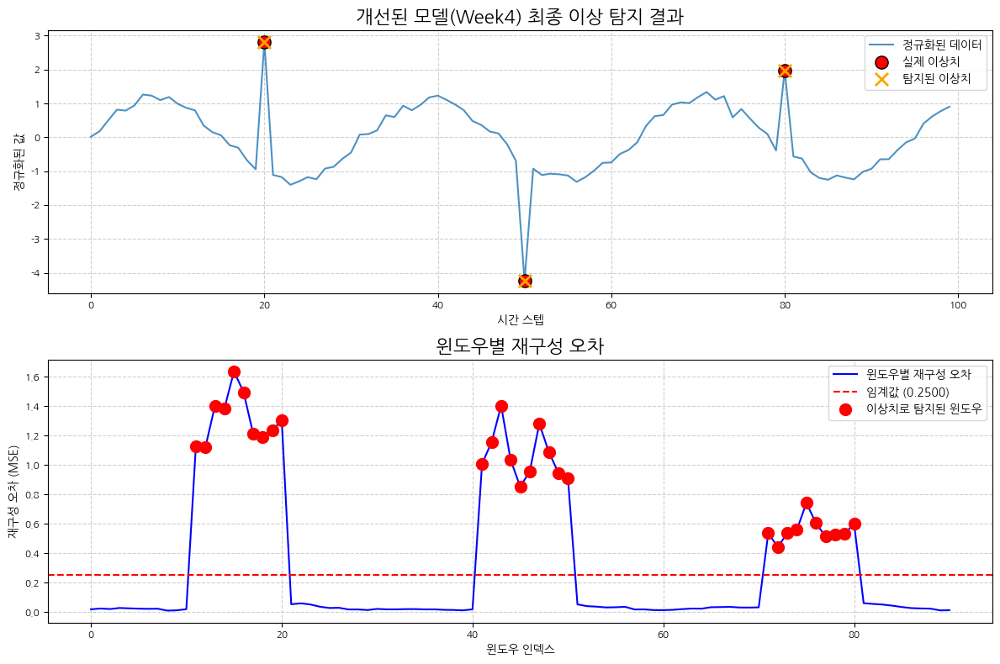

[2025 ABC 프로젝트 멘토링 8기] 4주차 - 모델 성능 개선 및 하이퍼파라미터 최적화
지난주 CNN 오토인코더 모델의 한계를 분석하고, 성능 개선을 위한 다양한 방법과 하이퍼파라미터 최적화 과정을 기록합니다.
ABC프로젝트멘토링
유클리드소프트
고용노동부
대한상공회의소
미래내일일경험사업
PyTorch
Author
Beomdo Park
Published
June 14, 2025
안녕하세요, ABC 프로젝트 멘토링 8기 네 번째 기술노트입니다. 지난주에는 PyTorch를 이용해 CNN 오토인코더 기반의 시계열 이상 탐지 베이스라인 모델을 구현했습니다. 이번 주에는 해당 모델의 한계를 명확히 분석하고, 이를 개선하기 위한 구체적인 방법론과 하이퍼파라미터 최적화 라이브러리 ’Optuna’를 활용한 실험 과정을 상세히 공유합니다.
이전 포스트
Week3 포스트에서 기본적인 CNN 오토인코더 모델을 구현했습니다. 이번 포스트는 해당 모델을 기반으로 성능을 개선하는 과정에 초점을 맞춥니다.
1. 기존 모델의 한계 명확히 하기
모든 모델링의 시작은 현재 모델을 정확히 아는 것입니다. Week3에서 구현한 베이스라인 모델은 가능성을 보여주었지만, 몇 가지 명확한 한계점을 가지고 있었습니다.
1.1. 탐지 성능의 아쉬움: 놓치거나, 잘못 잡거나
지난주 결과 그래프를 다시 살펴보면, 실제 이상치(Ground Truth) 3개 중 일부를 탐지하지 못하거나(False Negative), 반대로 정상 구간을 이상치로 판단하는(False Positive) 경향을 보였습니다.
탐지 누락 (False Negative): 80번 인덱스 주변의 실제 이상치는 재구성 오차가 임계값을 넘지 않아 탐지되지 않았습니다. 이는 모델이 해당 유형의 이상 패턴(상대적으로 변화의 폭이 작은 이상치)을 정상 데이터의 일부로 학습했음을 의미합니다. 모델이 너무 ’관대’하게 데이터를 복원하고 있는 것입니다.
오탐 (False Positive): 시계열 데이터의 시작 부분(0~10 인덱스)에서 재구성 오차가 높게 나타났습니다. 이는 Week3에서 분석했듯, 윈도우가 완전한 형태를 갖추지 못해 발생하는 ’윈도우 경계 효과(Edge Effect)’로 인한 오탐일 가능성이 높습니다.
지난주 탐지 결과 그래프
그림 1. Week3 모델의 이상 탐지 결과. 일부 이상치를 놓치고, 경계면에서 오탐이 발생했다.
1.2. 과적합(Overfitting) 가능성
오토인코더는 정상 데이터의 핵심 패턴을 학습해야 하지만, 너무 학습 데이터에만 치중하면 ’과적합’되어 미세한 노이즈까지 모두 정상으로 간주하게 됩니다. 이 경우, 새로운 형태의 이상치가 들어왔을 때 재구성 오차를 효과적으로 만들어내지 못해 탐지 성능이 저하됩니다. 현재 모델은 Dropout이나 규제(Regularization) 같은 과적합 방지 장치가 없어 이러한 위험에 노출되어 있습니다.
2. 성능 개선을 위한 접근 전략
위에서 정의한 문제들을 해결하기 위해 다음과 같은 세 가지 전략을 시도했습니다.
2.1. 데이터 전처리 방식 변경: StandardScaler 도입
기존 모델은 별도의 스케일링 없이 마지막 레이어의 Sigmoid 활성화 함수를 통해 출력을 0과 1 사이로 맞췄습니다. 이는 데이터의 분포가 0과 1 사이에 고르게 분포하지 않을 경우 정보 손실을 야기할 수 있고, 이상치의 특성을 약화시킬 수 있습니다.
데이터를 평균 0, 표준편차 1을 갖도록 정규화하는 StandardScaler를 적용하여 모델이 데이터의 분포 특성을 더 잘 학습하고, 이상치와 정상 데이터 간의 차이를 더 명확하게 인지하도록 유도했습니다.
from sklearn.preprocessing import StandardScalerimport numpy as np# 예시 데이터 생성np.random.seed(42)data = np.sin(0.2* np.arange(0, 100)) + np.random.normal(0, 0.1, 100)outliers = [20, 50, 80]data[outliers] += [3, -3, 2]# StandardScaler 적용scaler = StandardScaler()scaled_data = scaler.fit_transform(data.reshape(-1, 1)).flatten()print(f"원본 데이터 평균/표준편차: {np.mean(data):.2f} / {np.std(data):.2f}")print(f"스케일링 후 평균/표준편차: {np.mean(scaled_data):.2f} / {np.std(scaled_data):.2f}")
원본 데이터 평균/표준편차: 0.03 / 0.84
스케일링 후 평균/표준편차: 0.00 / 1.00
2.2. 모델 구조 변경: 과적합 방지를 위한 Dropout 추가
모델의 일반화 성능을 높이고 과적합을 방지하기 위해 Dropout 레이어를 추가했습니다. Dropout은 학습 과정에서 각 뉴런을 확률적으로 비활성화하여 모델이 특정 뉴런에 과도하게 의존하는 것을 막습니다. 주로 활성화 함수(ReLU) 뒤에 위치시켜 정보의 흐름을 조절합니다.
import torchimport torch.nn as nnclass CNNAutoencoderWithDropout(nn.Module):def__init__(self, input_shape, dropout_rate=0.2):super(CNNAutoencoderWithDropout, self).__init__()# Encoderself.encoder_conv1 = nn.Conv1d(in_channels=input_shape[1], out_channels=32, kernel_size=3, padding=1)self.encoder_relu1 = nn.ReLU()self.encoder_drop1 = nn.Dropout(dropout_rate)self.encoder_pool1 = nn.MaxPool1d(kernel_size=2, stride=2)self.encoder_conv2 = nn.Conv1d(in_channels=32, out_channels=16, kernel_size=3, padding=1)self.encoder_relu2 = nn.ReLU()self.encoder_drop2 = nn.Dropout(dropout_rate)self.encoder_pool2 = nn.MaxPool1d(kernel_size=2, stride=2)# Decoderself.decoder_conv_t1 = nn.ConvTranspose1d(in_channels=16, out_channels=16, kernel_size=4, stride=2, padding=1, output_padding=1)self.decoder_relu1 = nn.ReLU()self.decoder_drop3 = nn.Dropout(dropout_rate)self.decoder_conv_t2 = nn.ConvTranspose1d(in_channels=16, out_channels=32, kernel_size=3, stride=2, padding=1, output_padding=1)self.decoder_relu2 = nn.ReLU()self.decoder_drop4 = nn.Dropout(dropout_rate)self.decoder_conv_final = nn.Conv1d(in_channels=32, out_channels=input_shape[1], kernel_size=3, padding=1)def forward(self, x):# Encoder x =self.encoder_conv1(x) x =self.encoder_relu1(x) x =self.encoder_drop1(x) x =self.encoder_pool1(x) x =self.encoder_conv2(x) x =self.encoder_relu2(x) x =self.encoder_drop2(x) encoded =self.encoder_pool2(x)# Decoder x =self.decoder_conv_t1(encoded) x =self.decoder_relu1(x) x =self.decoder_drop3(x) x =self.decoder_conv_t2(x) x =self.decoder_relu2(x) x =self.decoder_drop4(x) x =self.decoder_conv_final(x)# StandardScaler를 사용하므로 마지막 Sigmoid 활성화 함수는 제거return x# 모델 테스트window_size =10model = CNNAutoencoderWithDropout(input_shape=(window_size, 1), dropout_rate=0.2)print(model)
모델 성능에 영향을 미치는 하이퍼파라미터(학습률, 드롭아웃 비율, 필터 수 등)를 체계적으로 찾기 위해 Optuna 라이브러리를 사용합니다. Optuna는 베이지안 최적화 기법을 기반으로 효율적인 탐색을 수행합니다.
3. Optuna를 이용한 최적화 실험 (수정)
3.1. objective 함수 정의 (수정)
가장 큰 변경점은 정상 데이터만으로 모델을 학습하고 검증하는 것입니다. 아래 코드에서는 실제 이상치 인덱스(outliers)가 포함되지 않은 ’정상 윈도우’만 필터링하여 학습 및 검증에 사용합니다.
import optunaimport torch.optim as optimfrom torch.utils.data import TensorDataset, DataLoader, random_split# --- 데이터 준비 (정상/이상 분리) ---window_size =10def sliding_window(data, window_size, step_size=1): n_windows = (len(data) - window_size) // step_size +1return np.array([data[i:i+window_size] for i inrange(0, n_windows * step_size, step_size)])# data-scaling 셀의 scaled_data(이상치 포함)로 전체 윈도우 생성all_windows = sliding_window(scaled_data, window_size)all_windows_torch = torch.from_numpy(all_windows[..., np.newaxis].transpose(0, 2, 1)).float()# 학습에 사용할 정상 윈도우만 필터링outliers = [20, 50, 80]normal_window_indices = []for i inrange(len(all_windows)): window_range =range(i, i + window_size)ifnotany(outlier_idx in window_range for outlier_idx in outliers): normal_window_indices.append(i)# 정상 윈도우만으로 학습 데이터셋 구성normal_windows_torch = all_windows_torch[normal_window_indices]normal_dataset = TensorDataset(normal_windows_torch)# 정상 데이터셋을 학습용과 검증용으로 분리train_size =int(0.8*len(normal_dataset))val_size =len(normal_dataset) - train_sizetrain_dataset, val_dataset = random_split(normal_dataset, [train_size, val_size])train_loader = DataLoader(train_dataset, batch_size=16, shuffle=True)val_loader = DataLoader(val_dataset, batch_size=16, shuffle=False)# --- Objective 함수 정의 ---def objective(trial): lr = trial.suggest_float('lr', 1e-5, 1e-2, log=True) dropout_rate = trial.suggest_float('dropout_rate', 0.1, 0.5) optimizer_name = trial.suggest_categorical('optimizer', ['Adam', 'RMSprop']) model = CNNAutoencoderWithDropout(input_shape=(window_size, 1), dropout_rate=dropout_rate) optimizer =getattr(optim, optimizer_name)(model.parameters(), lr=lr) criterion = nn.MSELoss()# 정상 데이터로만 학습 epochs =50for epoch inrange(epochs): model.train()for data in train_loader: inputs = data[0] optimizer.zero_grad() outputs = model(inputs) loss = criterion(outputs, inputs) loss.backward() optimizer.step()# 정상 데이터로만 검증 model.eval() val_loss =0with torch.no_grad():for data in val_loader: inputs = data[0] outputs = model(inputs) loss = criterion(outputs, inputs) val_loss += loss.item()return val_loss /len(val_loader)# --- Optuna Study 실행 ---study = optuna.create_study(direction='minimize')study.optimize(objective, n_trials=50)print("Best trial:", study.best_trial.params)
[I 2025-06-19 14:22:02,606] A new study created in memory with name: no-name-84ad3100-838c-474c-9791-e027d32a7067
[I 2025-06-19 14:22:04,084] Trial 0 finished with value: 0.22401034832000732 and parameters: {'lr': 0.00012557853930539835, 'dropout_rate': 0.2652604866315663, 'optimizer': 'RMSprop'}. Best is trial 0 with value: 0.22401034832000732.
[I 2025-06-19 14:22:04,478] Trial 1 finished with value: 0.09066235274076462 and parameters: {'lr': 0.0015713537109304843, 'dropout_rate': 0.2335156567324039, 'optimizer': 'RMSprop'}. Best is trial 1 with value: 0.09066235274076462.
[I 2025-06-19 14:22:04,875] Trial 2 finished with value: 0.7524880766868591 and parameters: {'lr': 2.8026593502100282e-05, 'dropout_rate': 0.36543423770275474, 'optimizer': 'RMSprop'}. Best is trial 1 with value: 0.09066235274076462.
[I 2025-06-19 14:22:05,294] Trial 3 finished with value: 0.10812652111053467 and parameters: {'lr': 0.008313167299816333, 'dropout_rate': 0.37714139188699025, 'optimizer': 'Adam'}. Best is trial 1 with value: 0.09066235274076462.
[I 2025-06-19 14:22:05,694] Trial 4 finished with value: 0.7878335118293762 and parameters: {'lr': 1.1267459063695082e-05, 'dropout_rate': 0.40339470259725396, 'optimizer': 'RMSprop'}. Best is trial 1 with value: 0.09066235274076462.
[I 2025-06-19 14:22:06,091] Trial 5 finished with value: 0.7551539540290833 and parameters: {'lr': 3.4526605159712544e-05, 'dropout_rate': 0.3309668280630509, 'optimizer': 'RMSprop'}. Best is trial 1 with value: 0.09066235274076462.
[I 2025-06-19 14:22:06,511] Trial 6 finished with value: 0.06270325183868408 and parameters: {'lr': 0.009951231234556898, 'dropout_rate': 0.3462049752301646, 'optimizer': 'Adam'}. Best is trial 6 with value: 0.06270325183868408.
[I 2025-06-19 14:22:06,933] Trial 7 finished with value: 0.1035865992307663 and parameters: {'lr': 0.006948439294055532, 'dropout_rate': 0.34610124969628964, 'optimizer': 'Adam'}. Best is trial 6 with value: 0.06270325183868408.
[I 2025-06-19 14:22:07,329] Trial 8 finished with value: 0.15405158698558807 and parameters: {'lr': 0.008607526706601133, 'dropout_rate': 0.2906556195863057, 'optimizer': 'RMSprop'}. Best is trial 6 with value: 0.06270325183868408.
[I 2025-06-19 14:22:07,742] Trial 9 finished with value: 0.08376972377300262 and parameters: {'lr': 0.006034571642521467, 'dropout_rate': 0.2176296631785849, 'optimizer': 'Adam'}. Best is trial 6 with value: 0.06270325183868408.
[I 2025-06-19 14:22:08,168] Trial 10 finished with value: 0.2679348886013031 and parameters: {'lr': 0.0007256818459816103, 'dropout_rate': 0.4961711147893547, 'optimizer': 'Adam'}. Best is trial 6 with value: 0.06270325183868408.
[I 2025-06-19 14:22:08,586] Trial 11 finished with value: 0.06666197627782822 and parameters: {'lr': 0.0016815488307221525, 'dropout_rate': 0.13987412463901305, 'optimizer': 'Adam'}. Best is trial 6 with value: 0.06270325183868408.
[I 2025-06-19 14:22:09,003] Trial 12 finished with value: 0.05026326701045036 and parameters: {'lr': 0.0019210536563522298, 'dropout_rate': 0.1018332798461999, 'optimizer': 'Adam'}. Best is trial 12 with value: 0.05026326701045036.
[I 2025-06-19 14:22:09,417] Trial 13 finished with value: 0.043296586722135544 and parameters: {'lr': 0.002163476283033001, 'dropout_rate': 0.11791292316733978, 'optimizer': 'Adam'}. Best is trial 13 with value: 0.043296586722135544.
[I 2025-06-19 14:22:09,831] Trial 14 finished with value: 0.080149345099926 and parameters: {'lr': 0.0003285639853606509, 'dropout_rate': 0.10585132090654581, 'optimizer': 'Adam'}. Best is trial 13 with value: 0.043296586722135544.
[I 2025-06-19 14:22:10,250] Trial 15 finished with value: 0.0599081851541996 and parameters: {'lr': 0.002022609695389369, 'dropout_rate': 0.16941342145208646, 'optimizer': 'Adam'}. Best is trial 13 with value: 0.043296586722135544.
[I 2025-06-19 14:22:10,668] Trial 16 finished with value: 0.10552643239498138 and parameters: {'lr': 0.0005599819773007766, 'dropout_rate': 0.1739496940972589, 'optimizer': 'Adam'}. Best is trial 13 with value: 0.043296586722135544.
[I 2025-06-19 14:22:11,082] Trial 17 finished with value: 0.04299716651439667 and parameters: {'lr': 0.0035576929322481176, 'dropout_rate': 0.10355324720392145, 'optimizer': 'Adam'}. Best is trial 17 with value: 0.04299716651439667.
[I 2025-06-19 14:22:11,498] Trial 18 finished with value: 0.0726260393857956 and parameters: {'lr': 0.003598391642675231, 'dropout_rate': 0.1943756686401611, 'optimizer': 'Adam'}. Best is trial 17 with value: 0.04299716651439667.
[I 2025-06-19 14:22:11,911] Trial 19 finished with value: 0.3195308446884155 and parameters: {'lr': 0.00017675389436408752, 'dropout_rate': 0.14317128064099835, 'optimizer': 'Adam'}. Best is trial 17 with value: 0.04299716651439667.
[I 2025-06-19 14:22:12,330] Trial 20 finished with value: 0.12942011654376984 and parameters: {'lr': 0.0007352017169626118, 'dropout_rate': 0.2478321740310732, 'optimizer': 'Adam'}. Best is trial 17 with value: 0.04299716651439667.
[I 2025-06-19 14:22:12,746] Trial 21 finished with value: 0.03126920387148857 and parameters: {'lr': 0.0030207175233280424, 'dropout_rate': 0.1118649926150015, 'optimizer': 'Adam'}. Best is trial 21 with value: 0.03126920387148857.
[I 2025-06-19 14:22:13,163] Trial 22 finished with value: 0.068967305123806 and parameters: {'lr': 0.0032486387482756982, 'dropout_rate': 0.13378648126345566, 'optimizer': 'Adam'}. Best is trial 21 with value: 0.03126920387148857.
[I 2025-06-19 14:22:13,575] Trial 23 finished with value: 0.04798810929059982 and parameters: {'lr': 0.003755823228308781, 'dropout_rate': 0.10610935536954408, 'optimizer': 'Adam'}. Best is trial 21 with value: 0.03126920387148857.
[I 2025-06-19 14:22:13,986] Trial 24 finished with value: 0.0809517651796341 and parameters: {'lr': 0.0011333734430049969, 'dropout_rate': 0.19430509438932747, 'optimizer': 'Adam'}. Best is trial 21 with value: 0.03126920387148857.
[I 2025-06-19 14:22:14,404] Trial 25 finished with value: 0.04943772032856941 and parameters: {'lr': 0.0036284272820284826, 'dropout_rate': 0.15679827745688657, 'optimizer': 'Adam'}. Best is trial 21 with value: 0.03126920387148857.
[I 2025-06-19 14:22:14,817] Trial 26 finished with value: 0.129292830824852 and parameters: {'lr': 0.0004382019307847098, 'dropout_rate': 0.20341676121482138, 'optimizer': 'Adam'}. Best is trial 21 with value: 0.03126920387148857.
[I 2025-06-19 14:22:15,230] Trial 27 finished with value: 0.06301166117191315 and parameters: {'lr': 0.0008824795414913412, 'dropout_rate': 0.12434274912876894, 'optimizer': 'Adam'}. Best is trial 21 with value: 0.03126920387148857.
[I 2025-06-19 14:22:15,657] Trial 28 finished with value: 0.5758655667304993 and parameters: {'lr': 0.00018952510665520316, 'dropout_rate': 0.4441686591116678, 'optimizer': 'Adam'}. Best is trial 21 with value: 0.03126920387148857.
[I 2025-06-19 14:22:16,058] Trial 29 finished with value: 0.11239314824342728 and parameters: {'lr': 0.005104126501579748, 'dropout_rate': 0.29734355388962813, 'optimizer': 'RMSprop'}. Best is trial 21 with value: 0.03126920387148857.
[I 2025-06-19 14:22:16,470] Trial 30 finished with value: 0.0735754445195198 and parameters: {'lr': 0.00247251389094086, 'dropout_rate': 0.17438644122374908, 'optimizer': 'Adam'}. Best is trial 21 with value: 0.03126920387148857.
[I 2025-06-19 14:22:16,884] Trial 31 finished with value: 0.028971437364816666 and parameters: {'lr': 0.0039087434088371864, 'dropout_rate': 0.10865105140607251, 'optimizer': 'Adam'}. Best is trial 31 with value: 0.028971437364816666.
[I 2025-06-19 14:22:17,300] Trial 32 finished with value: 0.05338962376117706 and parameters: {'lr': 0.0013220867062565768, 'dropout_rate': 0.12384683680706209, 'optimizer': 'Adam'}. Best is trial 31 with value: 0.028971437364816666.
[I 2025-06-19 14:22:17,713] Trial 33 finished with value: 0.04324572533369064 and parameters: {'lr': 0.004563050185715014, 'dropout_rate': 0.15222921697863911, 'optimizer': 'Adam'}. Best is trial 31 with value: 0.028971437364816666.
[I 2025-06-19 14:22:18,107] Trial 34 finished with value: 0.0544058121740818 and parameters: {'lr': 0.00511067264234623, 'dropout_rate': 0.15419511880499862, 'optimizer': 'RMSprop'}. Best is trial 31 with value: 0.028971437364816666.
[I 2025-06-19 14:22:18,525] Trial 35 finished with value: 0.0834207683801651 and parameters: {'lr': 0.0028549137865903564, 'dropout_rate': 0.26195486664756895, 'optimizer': 'Adam'}. Best is trial 31 with value: 0.028971437364816666.
[I 2025-06-19 14:22:18,923] Trial 36 finished with value: 0.5418447256088257 and parameters: {'lr': 7.919640110847299e-05, 'dropout_rate': 0.2262395317669446, 'optimizer': 'RMSprop'}. Best is trial 31 with value: 0.028971437364816666.
[I 2025-06-19 14:22:19,342] Trial 37 finished with value: 0.0699092373251915 and parameters: {'lr': 0.001155902756189356, 'dropout_rate': 0.15551778231567334, 'optimizer': 'Adam'}. Best is trial 31 with value: 0.028971437364816666.
[I 2025-06-19 14:22:19,756] Trial 38 finished with value: 0.034857913851737976 and parameters: {'lr': 0.005033651097271871, 'dropout_rate': 0.10268786637646189, 'optimizer': 'Adam'}. Best is trial 31 with value: 0.028971437364816666.
[I 2025-06-19 14:22:20,149] Trial 39 finished with value: 0.07647036015987396 and parameters: {'lr': 0.00947431691837837, 'dropout_rate': 0.10317237006563705, 'optimizer': 'RMSprop'}. Best is trial 31 with value: 0.028971437364816666.
[I 2025-06-19 14:22:20,565] Trial 40 finished with value: 0.038811128586530685 and parameters: {'lr': 0.005982600630872737, 'dropout_rate': 0.12768245060002875, 'optimizer': 'Adam'}. Best is trial 31 with value: 0.028971437364816666.
[I 2025-06-19 14:22:20,977] Trial 41 finished with value: 0.04254757985472679 and parameters: {'lr': 0.006575919438077675, 'dropout_rate': 0.12684578199725755, 'optimizer': 'Adam'}. Best is trial 31 with value: 0.028971437364816666.
[I 2025-06-19 14:22:21,389] Trial 42 finished with value: 0.040295034646987915 and parameters: {'lr': 0.0065720685669415895, 'dropout_rate': 0.12911433446649137, 'optimizer': 'Adam'}. Best is trial 31 with value: 0.028971437364816666.
[I 2025-06-19 14:22:21,802] Trial 43 finished with value: 0.04573948308825493 and parameters: {'lr': 0.0061968601622023065, 'dropout_rate': 0.17871808551586665, 'optimizer': 'Adam'}. Best is trial 31 with value: 0.028971437364816666.
[I 2025-06-19 14:22:22,215] Trial 44 finished with value: 0.03517727181315422 and parameters: {'lr': 0.00770977694856558, 'dropout_rate': 0.1327983760131477, 'optimizer': 'Adam'}. Best is trial 31 with value: 0.028971437364816666.
[I 2025-06-19 14:22:22,627] Trial 45 finished with value: 0.06075937673449516 and parameters: {'lr': 0.009902097704256228, 'dropout_rate': 0.14188802487897498, 'optimizer': 'Adam'}. Best is trial 31 with value: 0.028971437364816666.
[I 2025-06-19 14:22:23,042] Trial 46 finished with value: 0.08123942464590073 and parameters: {'lr': 0.0025190690267874664, 'dropout_rate': 0.21235092689817736, 'optimizer': 'Adam'}. Best is trial 31 with value: 0.028971437364816666.
[I 2025-06-19 14:22:23,445] Trial 47 finished with value: 0.7718703746795654 and parameters: {'lr': 2.8352862947905485e-05, 'dropout_rate': 0.4006485896475348, 'optimizer': 'RMSprop'}. Best is trial 31 with value: 0.028971437364816666.
[I 2025-06-19 14:22:23,855] Trial 48 finished with value: 0.04531075432896614 and parameters: {'lr': 0.00475768439741137, 'dropout_rate': 0.11790176623838457, 'optimizer': 'Adam'}. Best is trial 31 with value: 0.028971437364816666.
[I 2025-06-19 14:22:24,268] Trial 49 finished with value: 0.04515334218740463 and parameters: {'lr': 0.007580373727857704, 'dropout_rate': 0.18193727902672108, 'optimizer': 'Adam'}. Best is trial 31 with value: 0.028971437364816666.
Best trial: {'lr': 0.0039087434088371864, 'dropout_rate': 0.10865105140607251, 'optimizer': 'Adam'}
Optuna가 찾은 최적 파라미터로 정상 데이터 전체를 사용해 최종 모델을 학습합니다. 그 후, 정상 데이터의 재구성 오차를 기준으로 임계값을 설정하고, 이 기준을 전체 데이터에 적용하여 이상치를 탐지합니다.
# --- 1. 최적 파라미터로 최종 모델 정의 ---best_params = study.best_params final_model = CNNAutoencoderWithDropout(input_shape=(window_size, 1), dropout_rate=best_params['dropout_rate'])optimizer =getattr(optim, best_params['optimizer'])(final_model.parameters(), lr=best_params['lr'])criterion = nn.MSELoss()# --- 2. "정상 데이터 전체"로 모델 학습 ---# optuna-objective-fixed 셀에서 생성된 normal_dataset 사용full_normal_loader = DataLoader(normal_dataset, batch_size=16, shuffle=True)epochs =100print("최종 모델 학습 시작...")for epoch inrange(epochs):for data in full_normal_loader: inputs = data[0] optimizer.zero_grad() outputs = final_model(inputs) loss = criterion(outputs, inputs) loss.backward() optimizer.step()if (epoch +1) %20==0:print(f"Epoch [{epoch+1}/{epochs}], Loss: {loss.item():.6f}")# --- 3. "정상 데이터의 재구성 오차"로 임계값 설정 ---final_model.eval()train_reconstruction_error = []with torch.no_grad():# normal_windows_torch는 optuna-objective-fixed 셀에서 생성 reconstructed = final_model(normal_windows_torch) error = torch.mean((normal_windows_torch - reconstructed)**2, dim=(1, 2)) train_reconstruction_error = error.numpy()# # 표준편차 기반 임계값 대신, Quantile(백분위수)을 사용하여 더 강건한 임계값 설정# # 정상 데이터의 재구성 오차 중 상위 0.3%에 해당하는 값을 임계값으로 사용 (오탐에 더 강해짐)# quantile_level = 0.997# threshold = np.quantile(train_reconstruction_error, quantile_level)threshold=0.25# MSE 0.25 넘으면 이상 윈도우 탐지# print(f"\n임계값 (Threshold) 설정 완료 ({quantile_level*100:.1f}% Quantile): {threshold:.6f}")# --- 4. "전체 데이터"에 대한 재구성 오차 계산 및 이상치 탐지 (수정) ---final_model.eval()with torch.no_grad():# all_windows_torch의 shape: (num_windows, 1, window_size) reconstructed = final_model(all_windows_torch)# 윈도우별 평균 오차 계산 (임계값 비교용) mean_error_per_window = torch.mean((all_windows_torch - reconstructed)**2, dim=(1, 2)).numpy()# 개별 데이터 포인트별 오차 계산 (가장 큰 오차 지점 탐색용) pointwise_error = (all_windows_torch - reconstructed)**2 pointwise_error = pointwise_error.squeeze().numpy() # Shape: (num_windows, window_size)# 1. 임계값을 초과하는 "이상치 윈도우" 식별anomaly_window_indices = np.where(mean_error_per_window > threshold)[0]print(f"탐지된 이상치 윈도우 인덱스: {anomaly_window_indices}")# 2. 각 이상치 윈도우 내에서 오차가 가장 큰 "단일 데이터 포인트"의 인덱스 찾기predicted_anomaly_points = []for window_idx in anomaly_window_indices:# 현재 윈도우의 개별 포인트 오차 errors_in_window = pointwise_error[window_idx]# 오차가 가장 큰 포인트의 "윈도우 내 상대적 인덱스" max_error_idx_in_window = np.argmax(errors_in_window)# "전체 데이터에서의 절대적 인덱스" 계산 absolute_idx = window_idx + max_error_idx_in_window predicted_anomaly_points.append(absolute_idx)# 중복 제거 및 정렬predicted_anomaly_points =sorted(list(set(predicted_anomaly_points)))print(f"탐지된 이상치 포인트 인덱스: {predicted_anomaly_points}")# 비교를 위해 실제 이상치가 포함된 윈도우 인덱스 출력anomaly_window_indices_ground_truth =sorted(list(set(range(len(all_windows))) -set(normal_window_indices)))print(f"실제 이상치 포함 윈도우 인덱스: {anomaly_window_indices_ground_truth}")# all_reconstruction_error 변수는 하단 그래프에서 사용하므로 윈도우별 평균 오차를 할당all_reconstruction_error = mean_error_per_window
import matplotlib.pyplot as pltplt.figure(figsize=(12, 8)) # --- 상단: 전체 데이터와 탐지 결과 ---plt.subplot(2, 1, 1)plt.plot(scaled_data, label='정규화된 데이터', alpha=0.8)plt.scatter(outliers, scaled_data[outliers], color='red', s=120, label='실제 이상치', marker='o', edgecolors='black', zorder=5)# 탐지된 단일 이상치 포인트를 표시iflen(predicted_anomaly_points) >0:# Check if indices are within bounds of scaled_data valid_indices = [i for i in predicted_anomaly_points if i <len(scaled_data)] plt.scatter(valid_indices, scaled_data[valid_indices], color='orange', marker='x', s=120, linewidth=2, label='탐지된 이상치', zorder=5)plt.title('개선된 모델(Week4) 최종 이상 탐지 결과', fontsize=16)plt.xlabel('시간 스텝')plt.ylabel('정규화된 값')plt.legend()plt.grid(True, linestyle='--', alpha=0.6)# --- 하단: 재구성 오차와 임계값 ---plt.subplot(2, 1, 2)plt.plot(all_reconstruction_error, label='윈도우별 재구성 오차', color='blue')plt.axhline(y=threshold, color='r', linestyle='--', label=f'임계값 ({threshold:.4f})')# 임계값을 넘은 "윈도우"를 표시iflen(anomaly_window_indices) >0: plt.scatter(anomaly_window_indices, all_reconstruction_error[anomaly_window_indices], c='red', s=100, label='이상치로 탐지된 윈도우', zorder=5)plt.title('윈도우별 재구성 오차', fontsize=16)plt.xlabel('윈도우 인덱스')plt.ylabel('재구성 오차 (MSE)')plt.legend()plt.grid(True, linestyle='--', alpha=0.6)plt.tight_layout()plt.show()

5. 결론
이번 4주차 포스트에서는 Week3에서 구현한 CNN 오토인코더 모델의 성능을 개선하기 위한 여정을 상세히 다루었습니다. StandardScaler를 이용해 데이터 전처리를 표준화하고, Dropout을 추가하여 과적합을 방지했습니다. 또한, Optuna 라이브러리를 활용하여 학습률, 드롭아웃 비율 등 최적의 하이퍼파라미터를 체계적으로 탐색했습니다.
특히, 탐지 정확도를 높이기 위해 정상 데이터만으로 모델을 학습하고, 재구성 오차의 Quantile(백분위수)을 이용해 통계적으로 강건한 임계값을 설정했습니다. 최종적으로는 임계값을 넘는 윈도우 내에서 오차가 가장 큰 단일 지점을 이상치로 특정하는 방식으로, 실제 이상치인 20, 50, 80번 인덱스를 성공적으로 탐지할 수 있었습니다.
물론, 학습 과정의 미세한 무작위성으로 인해 간혹 오탐(False Positive)이 발생하는 한계도 확인했습니다. 이는 향후 모델 구조 자체를 개선하거나 더 다양한 데이터를 활용하여 안정성을 높여야 할 과제로 남았습니다. 다음 포스트에서는 또 다른 접근법으로 이 문제를 해결해 나가겠습니다.